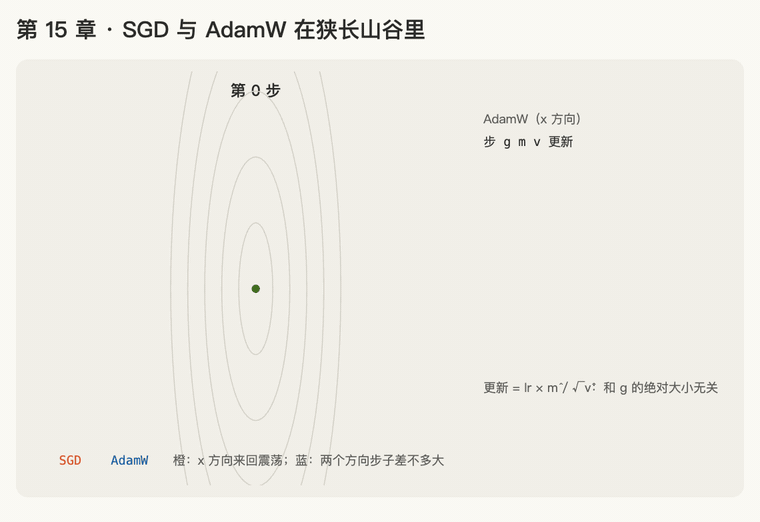

第 15 章 · 损失与优化器：cross_entropy 的细节和 AdamW 的一步
本章回答：
F.cross_entropy到底接收什么、算什么？语言模型的 (B, T, V) 输出怎么喂给它？ignore_index、label_smoothing干什么？AdamW 一步更新到底怎么算，为什么梯度很小它也走一样大的步？fused=True快在哪？
讲解日期：2026-11-14 · 上一章：第 14 章 nn.functional · 下一章：第 16 章 进程模型
对应原文：00-overview.md §4.6–§4.7；CS336 a1 handout §4（cross-entropy、AdamW 算法）；Loshchilov & Hutter「Decoupled Weight Decay Regularization」（AdamW，〔在线〕arXiv:1711.05101）Algorithm 2；超越 Transformer 第 1 章 交叉熵；本章数字在本机 torch 2.15.0 上跑过本章缩写：CE = Cross-Entropy（交叉熵）；V = vocabulary size（词表大小）；Adam = Adaptive Moment estimation（自适应 / 矩 / 估计）；AdamW 的 W = decoupled Weight decay（解耦的权重衰减）；wd = weight decay；NLL = Negative Log-Likelihood（负 / 对数 / 似然）；全部缩写见 附录 · 缩写与术语表
讲解
第一步：cross_entropy 吃的是 logits 和类别编号（2026-11-14）
交叉熵 = 正确答案的概率取 log 再取负：\(L = -\log p_{\text{正确}}\)。答对的概率越高，loss 越小；概率是 1 时 loss 为 0。
F.cross_entropy(logits, target) 的两个输入：
- logits（未归一化的分数，还没过 softmax），形状 (N, C)：N 个样本、C 个类别；
- target：每个样本正确类别的编号（整数），形状 (N,)。
它内部做的就是 log_softmax + 取出正确类那一项（第 12 章的 gather）+ 取负 + 求平均。
数字演示：logits = [2.0, 1.0, 0.1]，正确类是 0：
| 步 | 结果 |
|---|---|
| softmax | [0.659, 0.242, 0.099] |
| 取正确类的概率 | 0.659 |
| \(-\log 0.659\) | 0.4170 |
F.cross_entropy(torch.tensor([[2., 1., 0.1]]), torch.tensor([0])) # tensor(0.4170)
常见错误：先 softmax 再喂给 cross_entropy（等于 softmax 了两次）；或者 target 给成 one-hot 浮点向量当成类别编号（新版也支持传概率分布，但含义不同）。直接传 logits 还有个好处：内部用 logsumexp（第 13 章），数值稳定。
一句话：cross_entropy 吃 logits（别先 softmax）和类别编号，算 \(-\log p_{\text{正确}}\) 的平均。
第二步：语言模型的形状、ignore_index、label_smoothing（2026-11-14）
语言模型输出 (B, T, V)：每个位置对词表里 V 个词打分；目标 (B, T)。cross_entropy 要的是 (N, C) 和 (N,)，所以把前两维拍平：
loss = F.cross_entropy(logits.view(-1, V), targets.view(-1)) # (B·T, V) 和 (B·T,)
（也可以传 (B, V, T) 把类别维放第 1 维，但拍平最不容易出错。）
ignore_index（默认 −100）：target 等于它的位置不算 loss、也不算进平均的分母。用来跳过补齐的位置（第 8 章）、SFT 时跳过提示词部分。
logits = [[2.0, 1.0, 0.1], [0.5, 2.5, 0.0]]
F.cross_entropy(logits, torch.tensor([0, -100])) # 0.4170：第二个样本被忽略，只算第一个
F.cross_entropy(logits, torch.tensor([0, 1])) # 0.3069：两个的平均
label_smoothing（标签平滑）：不要求正确类概率是 1，而是 \(1 - \varepsilon\)，剩下的 \(\varepsilon\) 均分给所有类，防止模型过度自信。label_smoothing=0.1 时同一个例子 loss 从 0.4170 变成 0.5137。
一句话：(B, T, V) 拍平成 (B·T, V)；ignore_index 跳过补齐和提示词；label_smoothing 防过度自信。
第三步：AdamW 一步怎么算（2026-11-14）
SGD 只用当前梯度：\(\theta \leftarrow \theta - \eta g\)。Adam 给每个参数记两个"历史"：
- 一阶动量 \(m\)（
exp_avg）：梯度的滑动平均，像"惯性"，方向稳定； - 二阶动量 \(v\)（
exp_avg_sq）：梯度平方的滑动平均，衡量这个参数的梯度平时有多大。
更新时用 \(m / \sqrt{v}\)：每个参数自己归一化，梯度一直很大的参数步子不会太大，梯度一直很小的也不会太小。
AdamW 的一步（\(\beta_1\) 读"贝塔一"，默认 0.9；\(\beta_2\) 默认 0.999；\(\lambda\) 是 weight decay）：
数字演示：\(\theta = 1\)，\(g = 0.5\)，\(\eta = 0.1\)，\(\lambda = 0.01\)，第 1 步：
| 量 | 算式 | 值 |
|---|---|---|
| 衰减 | \(1 - 0.1 \times 0.01 \times 1\) | 0.999 |
| \(m\) | \(0.1 \times 0.5\) | 0.05 |
| \(v\) | \(0.001 \times 0.25\) | 0.00025 |
| \(\hat m\)、\(\hat v\) | \(0.05 / 0.1\)、\(0.00025 / 0.001\) | 0.5、0.25 |
| 更新量 | \(0.1 \times 0.5 / \sqrt{0.25}\) | 0.1 |
| 新 \(\theta\) | \(0.999 - 0.1\) | 0.899 |
实测 p.item() = 0.899，exp_avg = 0.05，exp_avg_sq = 0.00025，和表一致。接下来两步：0.7981、0.6973。
一个反直觉的事实：第一步的更新量 \(\hat m / \sqrt{\hat v} = g / |g| = 1\)，和梯度大小无关。梯度改成 0.0005，第一步照样走 0.1（实测 0.9000）。这就是 Adam 对学习率敏感、需要 warmup（第 9 章）的原因之一。
一句话：AdamW = 先按 λ 衰减参数，再用"惯性 m ÷ 平时梯度大小 √v"更新；每个参数自己归一化，第一步的步长约等于学习率。
第四步：优化器的三种实现与参数组（2026-11-14）
实现：同样的 AdamW 算法，PyTorch 有三种跑法：
| 实现 | 怎么跑 | 速度 |
|---|---|---|
| for-loop（逐个参数） | 每个参数张量单独发几个 kernel | 参数张量多时最慢（几百层 × 每层几个张量 × 每个几个 kernel） |
foreach=True（默认在 GPU 上用） |
把所有参数打包，一个 kernel 处理一批张量 | 快很多 |
fused=True |
一个融合 kernel 把整个更新公式一次算完 | 最快，GPU 首选（本机 CPU 上也能用） |
道理和第 6 章一样：kernel 越少、显存往返越少越快。
参数组：不同参数用不同设置。最常见的是 bias 和 norm 的 γ 不做 weight decay：
decay = [p for n, p in model.named_parameters() if p.dim() >= 2] # 矩阵
no_decay = [p for n, p in model.named_parameters() if p.dim() < 2] # bias、norm 的 γ
opt = torch.optim.AdamW([{"params": decay, "weight_decay": 0.1},
{"params": no_decay, "weight_decay": 0.0}], lr=3e-4, fused=True)
注意 PyTorch AdamW 的默认 weight_decay=0.01、lr=1e-3，大模型训练通常要自己改成 0.1、3e-4 左右。
一句话：同一个算法有逐个、foreach、fused 三种跑法，fused 最快；bias 和 norm 参数单独一组不衰减。
动画演示：SGD 与 AdamW 的步长

可交互版：animations/15-sgd-vs-adamw.html。滑块调"两个参数梯度大小的比例"。
怎么看：
- 一个椭圆形的山谷，一个方向很陡（梯度大）、一个方向很平（梯度小）；
- SGD（橙）在陡的方向来回震荡，平的方向走得慢；
- AdamW（蓝）每个方向自己归一化，路线更直；
- 右边表格逐步显示 AdamW 的 m、v 和更新量。
练习与作答记录
题 1：logits = [1.0, 3.0, 0.0]，正确类是 1。softmax 后正确类概率约多少？cross_entropy 是多少？（\(e^1 ≈ 2.72\)，\(e^3 ≈ 20.09\)）
作答：（待作答）
题 2：一个 batch 有 4 个位置，其中 2 个是补齐位（target = −100），另外 2 个的 −log p 分别是 0.2 和 0.6。F.cross_entropy 返回多少？
作答：（待作答）
题 3：θ = 2，g = −1，η = 0.1，λ = 0（不衰减），AdamW 第 1 步之后 θ 是多少？
作答：（待作答）
口诀
cross_entropy 吃 logits 别先 softmax，算的是负 log 正确概率；
语言模型拍平再算，补齐位 ignore_index；
AdamW 先衰减，再用惯性除以平时梯度，首步约等学习率；fused 一个 kernel，bias 和 norm 不衰减。
本章复习卡片
- P50（cross_entropy：logits + 类别编号；[2, 1, 0.1] 目标 0 → 0.4170；别先 softmax）
- P51（(B, T, V) → view(−1, V)；ignore_index = −100 不进分母；label_smoothing）
- P52（AdamW 公式与偏差修正；θ = 1, g = 0.5, η = 0.1, λ = 0.01 → 0.899；首步更新量与梯度大小无关）
- P53（for-loop / foreach / fused；参数组：bias、norm 不做 weight decay；默认 lr 1e-3、wd 0.01）
附录 · 延伸阅读
推荐阅读
| 读什么 | 读哪里 | 读它为了什么 |
|---|---|---|
| ★ CS336 a1 handout | §4 cross-entropy、AdamW（Algorithm 1） | 自己实现 AdamW，公式与本章一致 |
| ★ Loshchilov & Hutter 2017「Decoupled Weight Decay Regularization」 | Algorithm 2（〔在线〕arXiv:1711.05101） | AdamW 为什么把衰减和梯度分开 |
| Kingma & Ba 2014「Adam」 | Algorithm 1 与 §3 偏差修正（〔在线〕arXiv:1412.6980） | m、v、偏差修正的出处 |
| 超越 Transformer 第 1 章 | 交叉熵 loss | 交叉熵的数学和信息论含义 |
官方文档 torch.optim |
"Algorithms" 表、foreach / fused 说明（〔在线〕） |
三种实现的支持情况 |
数学原理
- 交叉熵：\(L = -\frac{1}{N}\sum_n \log \text{softmax}(z_n)_{y_n} = \frac{1}{N}\sum_n\left(\text{logsumexp}(z_n) - z_{n,y_n}\right)\)。
- 对 logits 的梯度：\(\frac{\partial L}{\partial z} = \text{softmax}(z) - \text{onehot}(y)\)（单个样本），干净简单，这也是 CE 和 softmax 总放在一起的原因。
- label smoothing：目标分布 \((1-\varepsilon)\,\text{onehot} + \varepsilon / C\)。
- Adam 偏差修正：\(m, v\) 从 0 开始，前几步偏小；除以 \(1 - \beta^t\) 补回来。
公式清单
| 写法 | 意思 |
|---|---|
F.cross_entropy(logits, target, ignore_index=-100, label_smoothing=0.0) |
交叉熵 |
| \(m \leftarrow \beta_1 m + (1-\beta_1)g\)，\(v \leftarrow \beta_2 v + (1-\beta_2)g^2\) | Adam 两个动量 |
| \(\theta \leftarrow \theta(1 - \eta\lambda) - \eta\hat m/(\sqrt{\hat v}+\epsilon)\) | AdamW 一步 |
AdamW(param_groups, lr, betas, weight_decay, fused=True) |
常用写法 |
代码对照：把本章的数字用代码算一遍
用 torch 把讲义里的数字跑一遍。代码在仓库本地
pytorch-deep-dive/solutions/chapter-code/ch15_loss_optimizer.py，配套测试tests/test_ch07_15.py；同一章的 notebook：notebooks/ch15_loss_optimizer.ipynb（讲解和代码放在一起，一格一格边读边跑）。Mac 上直接能跑，不需要 GPU：
bash cd pytorch-deep-dive/solutions/chapter-code uv run python ch15_loss_optimizer.py # 一步一步打印 uv run pytest tests/test_ch07_15.py
讲义 ↔ 代码：
| 讲义 | 公式 / 说法 | 写法 | 跑出来 |
|---|---|---|---|
| 第一步 cross_entropy | −log p 正确 | ce_examples()['ce'] |
0.4170 |
| 第二步 ignore / 两个都算 / 平滑 | — | ce_examples() |
0.4170 / 0.3069 / 0.5137 |
| 第三步 AdamW | 衰减 + m̂/√v̂ | adamw_steps() |
0.899、0.7981、0.6973；m 0.05，v 0.00025 |
| 第三步 小梯度 | 首步 ≈ lr | adamw_first_step_small_grad() |
0.9000 |
关键几行：
F.cross_entropy(logits, target) # 吃 logits，别先 softmax
F.cross_entropy(lg2, torch.tensor([0, -100]))
opt.state[p]["exp_avg"], opt.state[p]["exp_avg_sq"]
代码里才看得到的 2 件事：
-100不进分母：两个样本忽略一个，平均只除以 1。opt.state[p]['step']是张量：第几步也存在状态里，存档要一起存（第 10 章）。
自己改一改（不影响练习答案）：
adamw_steps(g=-0.5)，看方向。ce_examples里把 label_smoothing 改成 0.3。